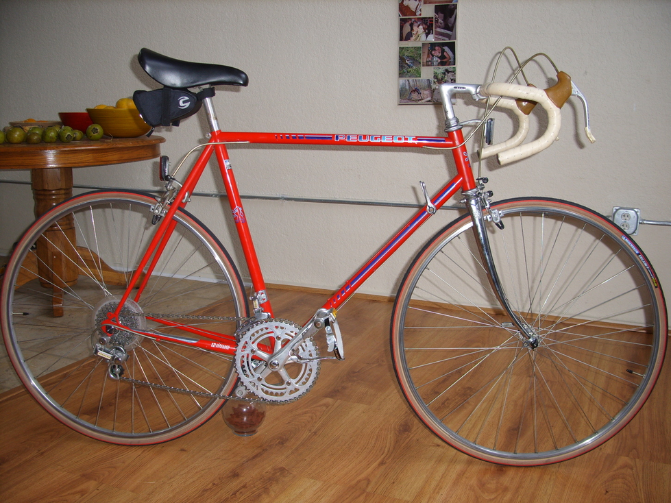
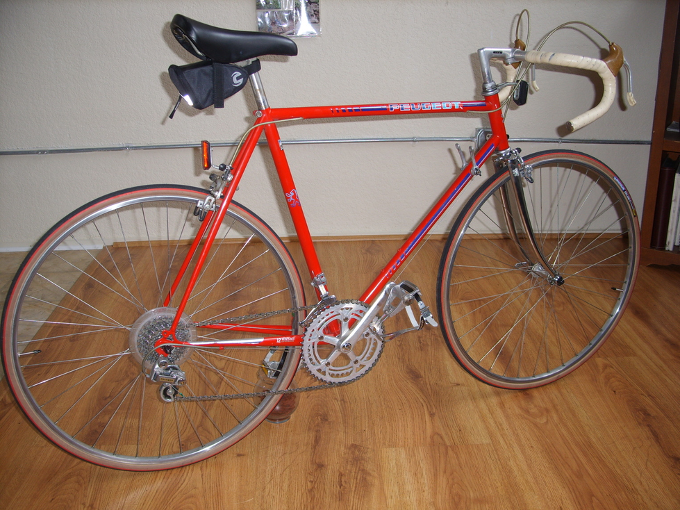
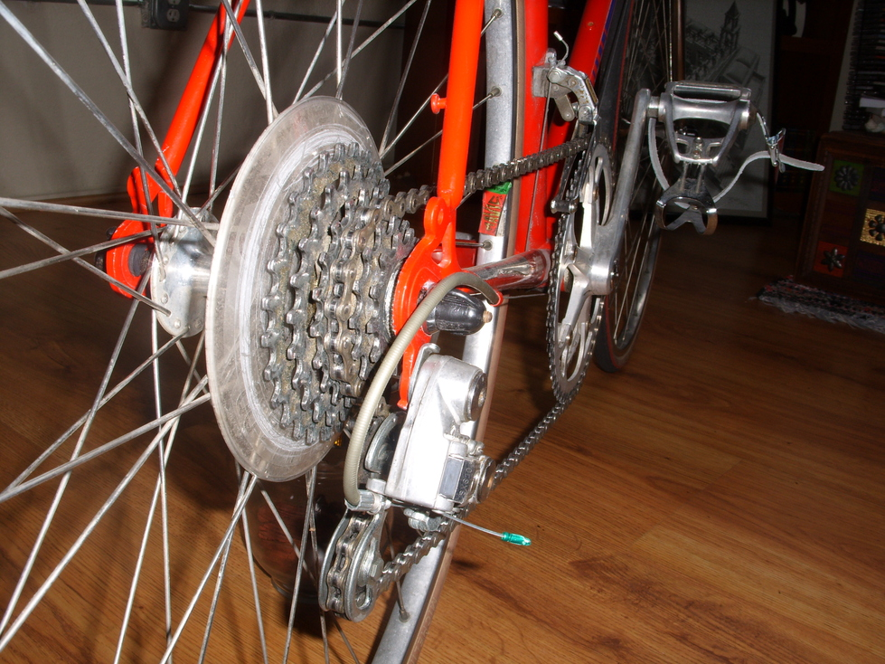
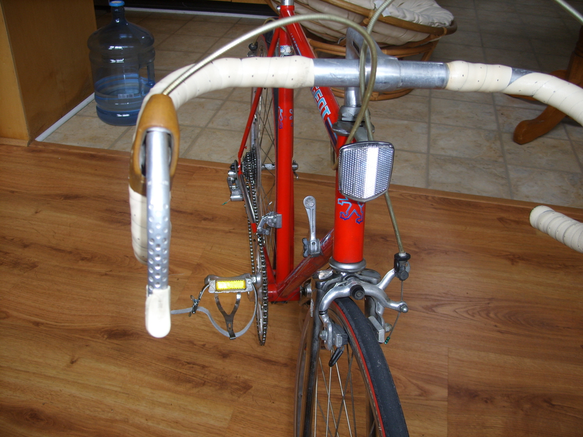
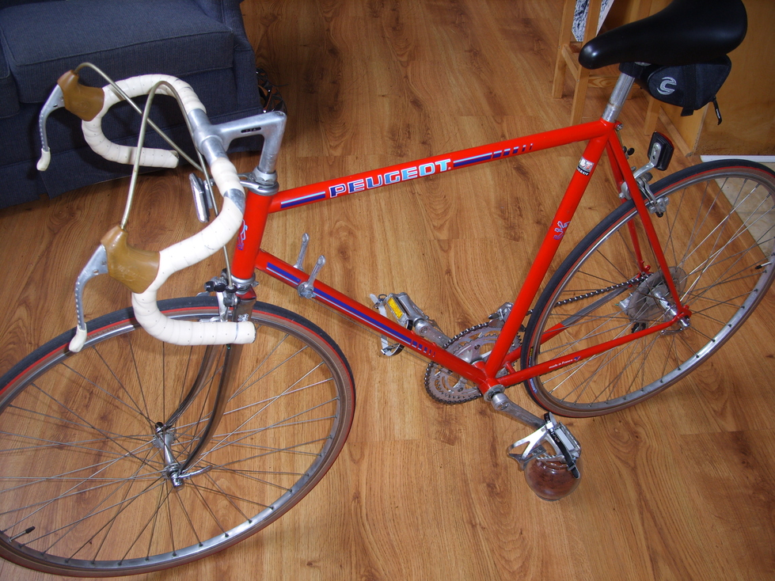

Peugeot    
Model: PH11 Year: 1983 Serial: Y3121840 Frame Size: 57cm Brakes: Weinmann Pedals: Maillard CX Wheels: Mavic 700c Module E Hubs: Maillard Helicomatic Tires: Michelin Erilium 2 700x23c Rear Derailleur: Simplex SX610 Front Derailleur: Seatpost: JPR 24mm Stem: CTA
Craigslist: $120 Sopo: $ 25 Fork (REI): $ 20 Tires: $ 30 Tubes: $ 8 Total: $203